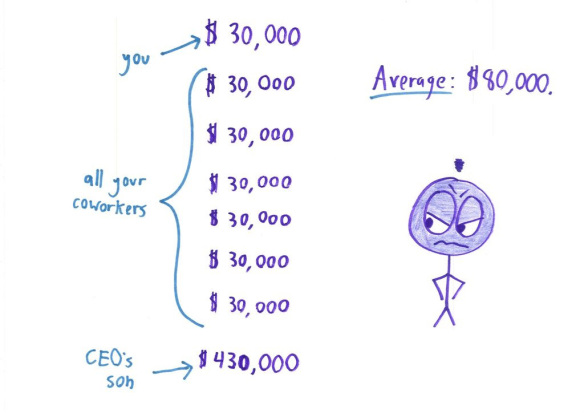
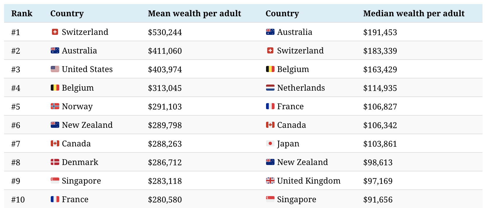

Descriptive Statistics
Samuel Burer
August 2022
Descriptive Statistics
For descriptive statistics, we will use Excel’s Data Analysis Toolpak:
- LinkedIn Learning tutorial to enable the Data Analysis Toolpak and use it for calculating descriptive statistics
What are descriptive statistics?
- Numbers that summarize a single numerical column/variable of data
- Complement the information provided by histograms
- In Excel, calculated via Data > Data Analysis… > Descriptive Statistics
- Example: Excel file homes.xlsx
Note: Descriptive statistics do not really make sense for non-numerical data
The most important statistics:
- Mean = arithmetic average (i.e., sum divided by count)
- Median = middle data value when data is arranged from smallest to largest
- Mode = most frequently occurring data value
- Min = smallest value; Max = largest value
- Range = Max \(-\) Min
- Standard deviation
- measure of how spread out the data values are
- [more details shortly…]
- Variance = (standard deviation)\(^2\)
- Standard error = [to be discussed later…]
These statistics help answer two important questions:
- What is most common in the data; what is the “center”?
- Mean, median, and mode each provide a slightly different answer
- How spread out is the data from its center?
- Minimum, maximum, and range give one answer
- Standard deviation and variance give another
Mean vs Median vs Mode

- Mean = $45,671
- Median = $16,667
- Mode = $10,000
(The actual U.S. descriptive statistics are even more extreme!)

Source: mathwithbaddrawings.com

Source: visualcapitalist.com
Data Samples
Imagine a single column/variable of sample data
\(n =\) sample size
Data values are numbered \(x_1, x_2, \ldots, x_n\) (but the order does not matter)
Mean
\[ \bar x = \frac{x_1 + x_2 + \cdots + x_n}{n} \]
Called the sample mean or sample average (or arithmetic average)
Most frequently used measure of central tendency
Standard Deviation
\[ s = \sqrt{ \frac{ (x_1 - \bar x)^2 + (x_2 - \bar x)^2 + \cdots + (x_n - \bar x)^2 }{ n-1 } } \]
Called the sample standard deviation
A nonnegative number (cannot be negative!)
See Excel file mean_stdev.xlsm
A Word of Warning

Source: autodeskresearch.com
- Descriptive statistics are only part of the story!
- Be sure to visualize your data